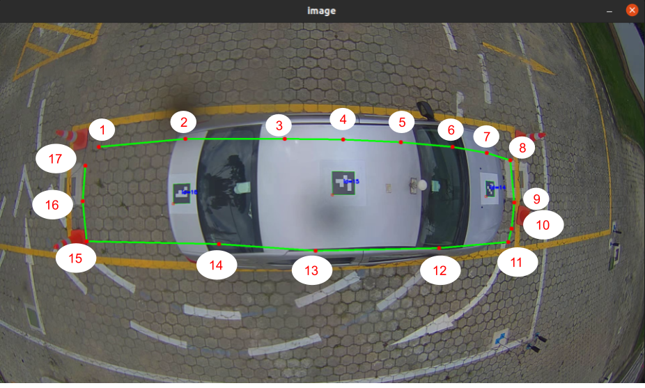
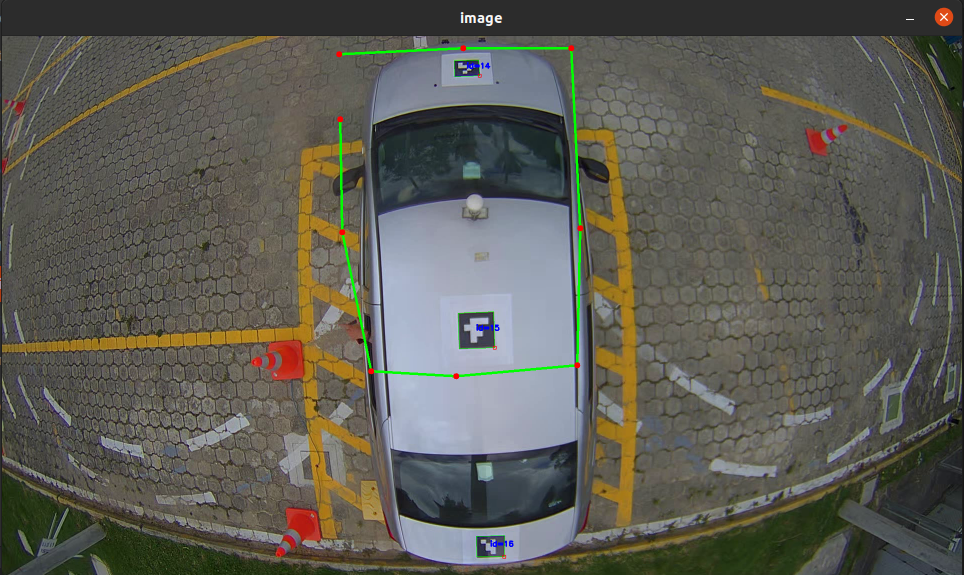
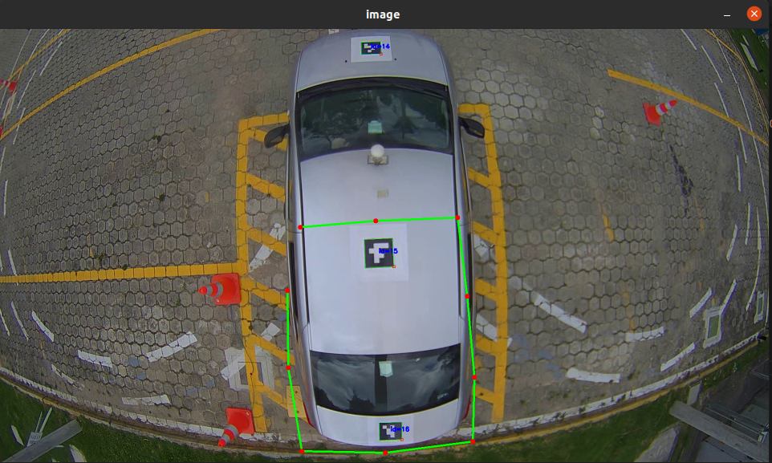
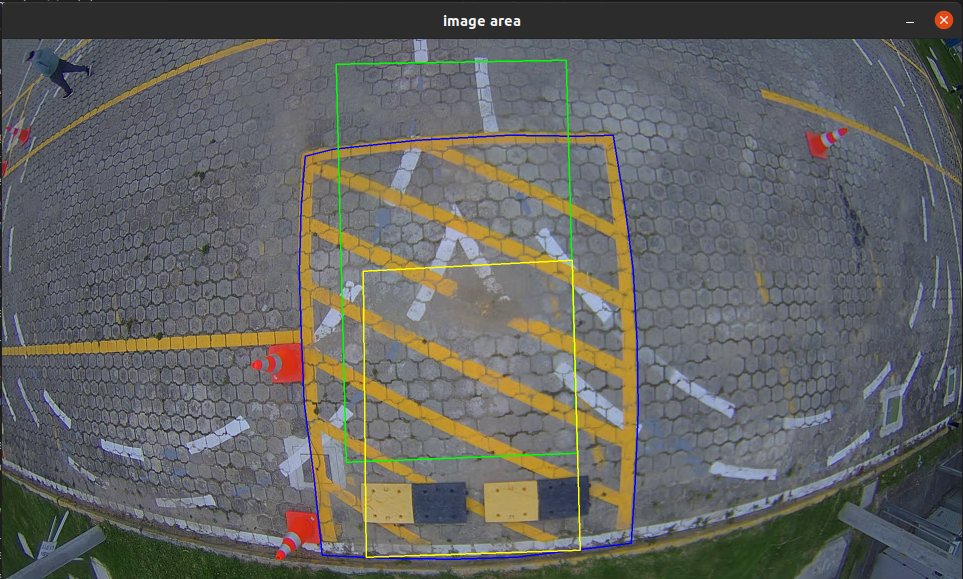

Update areas for parking spots
If the parking spot is changed or the camera is moved to a new location, the area needs to be updated. Each parking spot has two associated variables AREA_PARKING, which is the area as seen on the image, and AREA_ALLOWED, which is the actual area in which the Aruco markers should be detected to be considered as parked. An example for an inline parking spot is shown below:
AREA_PARKING_post19 = np.array([[108*2, 273*2],
[776*2, 283*2],
[779*2, 332*2],
[776*2, 414*2],
[774*2, 476*2],
[752*2, 483*2],
[674*2, 501*2],
[592*2, 516*2],
[486*2, 524*2],
[354*2, 521*2],
[261*2, 508*2],
[195*2, 493*2],
[139*2, 476*2],
[117*2, 468*2],
[109*2, 409*2],
[105*2, 326*2],
], dtype=np.int32)
AREA_ALLOWED_post19 = np.array([[109*2, 377*2],
[779*2, 382*2],
[774*2, 476*2],
[752*2, 483*2],
[674*2, 501*2],
[592*2, 516*2],
[486*2, 524*2],
[354*2, 521*2],
[261*2, 508*2],
[195*2, 493*2],
[139*2, 476*2],
[117*2, 468*2],
], dtype=np.int32)
Update the parking area
To update the parking area, it is needed to create the contour of the parking area as shown in the video. To do so, the following steps are needed:
Open the file ~/ansv_componente3/Pista/utils/parking_spots.py and update the variables video_path to point to the video file where the parking spot is located.
35 # Set the direction of the video 36 video_path = "/home/josefajardo/Documents/Set_datos_ANSV/Carro_pista/Prueba_06_09_2022_10_24_36_HONDA/videos/Poste_20/Poste_20_06_09_2022_10_24_36.avi"
Run the parking_spots.py application using the following commands:
cd ~/ansv_componente3/Pista/Vision/utils python3 parking_spots.pyA window should appear as shown below.
In the video you can use the left click to add points to the countour. The points need to be added in a clockwise manner starting with the upper-left corner of the image. You can add as many points as needed to define the countour. An example with 25 points is shown below, where the points are marked with a red circle and are numbered from 1 to 25, noting that they are added in a clockwise manner.
Once the countour is defined, press the letter q or ESC on the keyboard to print the final countour in the terminal and close the window. As an example, the countour of the previous image is shown below:
# FINAL POINTS np.array([ [218, 310], [340, 288], [488, 264], [652, 248], [844, 244], [1036, 248], [1190, 260], [1318, 274], [1406, 286], [1484, 300], [1532, 312], [1548, 418], [1554, 524], [1550, 614], [1548, 686], [1404, 710], [1232, 728], [1060, 738], [890, 744], [670, 742], [454, 734], [276, 718], [208, 714], [198, 562], [202, 440], ], dtype=np.int32)
Note
The countour is printed in the terminal as a list of points. The points are printed as a tuple of two integers. The first integer is the x coordinate and the second integer is the y coordinate.
Paste the previous contour in the respective file to update the desired parking spot. As an example, the previous contour of the parking spot of the post 20 should look like the code below:
#-------------------------------------------------------------------------# # Post 20 AREA_PARKING_post20 = np.array([ [218, 310], [340, 288], [488, 264], [652, 248], [844, 244], [1036, 248], [1190, 260], [1318, 274], [1406, 286], [1484, 300], [1532, 312], [1548, 418], [1554, 524], [1550, 614], [1548, 686], [1404, 710], [1232, 728], [1060, 738], [890, 744], [670, 742], [454, 734], [276, 718], [208, 714], [198, 562], [202, 440], ], dtype=np.int32)
{kind=link}
{kind=link}
{kind=link}
Update the allowed area
As the parking area is just a visual cue and has no relevance in the scoring, the AREA_ALLOWED is the most important variable in the parking maneuvers. This variable defines the area where the Aruco markers should be detected to be considered as a valid parking maneuver. Depending if the parking is inline or in reverse the way of updating this parameter is slightly different.
Inline parking
To update the allowed area for inline parking, it is needed to manually create the contour of the allowed area, i.e., where the Aruco markers have to be detected to be considered as a valid parking maneuver. This area should generally be inside the AREA_PARKING but it is not mandatory. To do so, the following steps are needed:
Open the file ~/ansv_componente3/Pista/utils/allowed_area_parking.py and update the variables video_path to point to the video file where the parking spot is located.
# Set the direction of the video video_path = "/home/josefajardo/Documents/Set_datos_ANSV/Carro_pista/Prueba_06_09_2022_10_24_36_HONDA/videos/Poste_20/Poste_20_06_09_2022_10_24_36.avi"
In the same file edit the initial_frame to an integer that represents the frame number where the vehicle is close to the line but before passing it.
41 # Initial frame 42 initial_frame = 5000
Note
The initial frame can be estimated using the fps of the video and the time when the vehicle is close to the line but before passing it. E.g.: If the video has a fps of 15 and the vehicle is close to the line at 100 seconds, the initial frame would be 1500.
Open a terminal and run the allowed_area_parking.py application using the following commands:
cd ~/ansv_componente3/Pista/Vision/utils python3 allowed_area_parking.pyA window should appear as shown below.
In the video you can use the left click to add points to the countour. The area to define is the maximum area where ALL the Aruco markers must be located so the vehicle is inside the parking spot.
The points need to be added in a clockwise manner starting with the upper-left corner of the area. You can add as many points as needed to define the countour. An example with 17 points is shown below, where the points are marked with a red circle and are numbered from 1 to 17, noting that they are added in a clockwise manner.
Note
The process to define the AREA_ALLOWED is very manual and iterative. So this process may have to be repeated several times to get the desired result.
Note
The first and final points should be the upper-left and lower-left corners of the image respectively.
Note
To remove the latest point added use the right click on the image.
Once the countour is defined, press the letter q or ESC on the keyboard to print the final countour in the terminal and close the window. As an example, the countour of the previous image is shown below:
# FINAL POINTS np.array([ [294, 370], [552, 346], [848, 346], [1022, 348], [1194, 356], [1348, 370], [1450, 388], [1520, 410], [1532, 536], [1524, 614], [1514, 654], [1308, 672], [940, 680], [652, 660], [258, 652], [246, 532], [254, 426], ], dtype=np.int32)
Note
The countour is printed in the terminal as a list of points. The points are printed as a tuple of two integers. The first integer is the x coordinate and the second integer is the y coordinate
Paste the previous contour in the respective file to update the desired parking spot. As an example, the previous contour of the parking spot of the post 20 should look like the code below:
#-------------------------------------------------------------------------# # Post 20 AREA_PARKING_post20 = np.array([ [218, 310], [340, 288], [488, 264], [652, 248], [844, 244], [1036, 248], [1190, 260], [1318, 274], [1406, 286], [1484, 300], [1532, 312], [1548, 418], [1554, 524], [1550, 614], [1548, 686], [1404, 710], [1232, 728], [1060, 738], [890, 744], [670, 742], [454, 734], [276, 718], [208, 714], [198, 562], [202, 440], ], dtype=np.int32) AREA_ALLOWED_post20 = np.array([ [294, 370], [552, 346], [848, 346], [1022, 348], [1194, 356], [1348, 370], [1450, 388], [1520, 410], [1532, 536], [1524, 614], [1514, 654], [1308, 672], [940, 680], [652, 660], [258, 652], [246, 532], [254, 426], ], dtype=np.int32)
{kind=link}
{kind=link}
Reverse parking
The reverse parking spot differs a little to the inline parking in the way that the AREA_ALLOWED is separated in two variables AREA_ALLOWED_FRONT and AREA_ALLOWED_BACK. The AREA_ALLOWED_FRONT is the area where the front and middle Aruco marker should be detected to be considered inside the parking spot. The AREA_ALLOWED_BACK is the area where the middle and back Aruco marker should be detected to be considered inside the parking spot. The AREA_ALLOWED_FRONT and AREA_ALLOWED_BACK are defined in the same way as the AREA_ALLOWED in the inline parking.
To update any of the AREA_ALLOWED variables, follow the steps below.
Open the file ~/ansv_componente3/Pista/utils/allowed_area_parking.py and update the variables video_path to point to the video file where the parking spot is located.
35 # Set the direction of the video 36 video_path = "/home/josefajardo/Documents/Set_datos_ANSV/Carro_pista/Prueba_06_09_2022_10_24_36_HONDA/videos/Poste_18/Poste_18_06_09_2022_10_24_36.avi"
In the same file edit the initial_frame to an integer that represents the frame number where the vehicle is close to the line but before passing it.
41 # Initial frame 42 initial_frame = 5000
Note
The initial frame can be estimated using the fps of the video and the time when the vehicle is close to the line but before passing it. E.g.: If the video has a fps of 15 and the vehicle is close to the line at 100 seconds, the initial frame would be 1500.
Open a terminal and run the allowed_area_parking.py application using the following commands:
cd ~/ansv_componente3/Pista/Vision/utils python3 allowed_area_parking.pyA window will open as shown below.
First, create the contour of the AREA_ALLOWED_FRONT, where the front and middle Aruco markers should be located to consider a valid parking. To do this you can use the left click to add points to the countour. You can use as many points as desired to define the contour. An example is shown below:
Note
To remove the latest point added use the right click on the image.
Note
DO NOT FORGET THAT THE COUNTOURS SHOULD BE DEFINED IN A CLOCKWISE MANNER. As shown in the image below.
Once the countour is defined, press the letter q or ESC on the keyboard to print the final countour in the terminal and close the window. As an example, the countour of the previous image is shown below:
# FINAL POINTS np.array([ [674, 36], [922, 24], [1138, 24], [1156, 384], [1150, 658], [908, 680], [738, 670], [680, 392], [676, 166], ], dtype=np.int32)
Note
The countour is printed in the terminal as a list of points. The points are printed as a tuple of two integers. The first integer is the x coordinate and the second integer is the y coordinate
Paste the previous contour in the respective file to update the desired parking spot. As an example, the variable AREA_ALLOWED_FRONT should like the excerpt below:
AREA_ALLOWED_FRONT = np.array([ [674, 36], [922, 24], [1138, 24], [1156, 384], [1150, 658], [908, 680], [738, 670], [680, 392], [676, 166], ], dtype=np.int32)
Re-launch the application using the steps 1-4.
Now define the AREA_ALLOWED_BACK, which is the area where the middle and back Aruco markers should be located to consider a valid parking. To do this you can use the left click to add points to the countour. You can use as many points as desired to define the contour. An example is shown below:
Note
To remove the latest point added use the right click on the image.
Note
DO NOT FORGET THAT THE COUNTOURS SHOULD BE DEFINED IN A CLOCKWISE MANNER. As shown in the image below.
Once the countour is defined, press the letter q or ESC on the keyboard to print the final countour in the terminal and close the window. As an example, the countour of the previous image is shown below:
# FINAL POINTS np.array([ [752, 494], [940, 478], [1144, 470], [1168, 666], [1186, 868], [1182, 1028], [964, 1056], [756, 1052], [722, 844], [720, 652], ], dtype=np.int32)
Note
The countour is printed in the terminal as a list of points. The points are printed as a tuple of two integers. The first integer is the x coordinate and the second integer is the y coordinate
Paste the previous contour in the respective file to update the desired parking spot. As an example, the variable AREA_ALLOWED_FRONT should like the excerpt below:
AREA_ALLOWED_FRONT = np.array([ [674, 36], [922, 24], [1138, 24], [1156, 384], [1150, 658], [908, 680], [738, 670], [680, 392], [676, 166], ], dtype=np.int32) AREA_ALLOWED_BACK = np.array([ [752, 494], [940, 478], [1144, 470], [1168, 666], [1186, 868], [1182, 1028], [964, 1056], [756, 1052], [722, 844], [720, 652], ], dtype=np.int32)
To validate the areas you can process the reverse parking video using the car_vision_algorithms.py application. An example where the AREA_PARKING, AREA_ALLOWED_FRONT and AREA_ALLOWED_BACK can be seen is showned below. The AREA_PARKING is shown in color blue, the AREA_ALLOWED_FRONT is shown in color green and the AREA_ALLOWED_BACK is shown in color yellow.

{kind=link}
{kind=link}
{kind=link}
{kind=link}